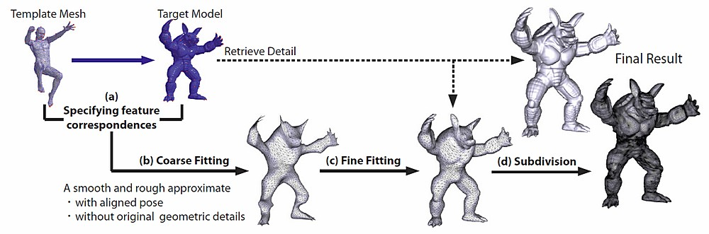
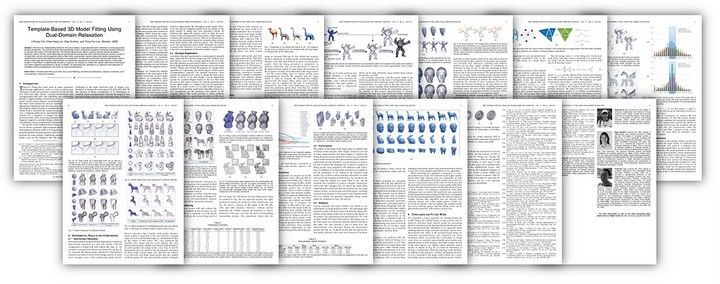

|
Template-based 3D Model Fitting
I-Cheng Yeh
Chao-Hung Lin
Olga Sorkine
Tong-Yee Lee |
|
 | |
| Abstract | We introduce a template fitting method for 3D surface meshes. A given template mesh is deformed to closely approximate the input 3D geometry. The connectivity of the deformed template model is automatically adjusted to facilitate the geometric fitting and to ascertain high quality of the mesh elements. The template fitting process utilizes a specially tailored Laplacian processing framework, where in the first, coarse fitting stage we approximate the input geometry with a linearized biharmonic surface (a variant of LS-mesh [39]), and then the fine geometric detail is fitted further using iterative Laplacian editing with reliable correspondence constraints and a local surface flattening mechanism to avoid foldovers. The latter step is performed in the dual mesh domain, which is shown to encourage near-equilateral mesh elements and significantly reduces the occurrence of triangle fold-overs, a well known problem in mesh fitting. To experimentally evaluate our approach, we compare our method with relevant state-of-the-art techniques and confirm significant improvements of results. In addition, we demonstrate the usefulness of our approach to the application of consistent surface parameterization (also known as cross-parameterization). |
| Paper Download |
 |
| Materials Download |
[Data of Figures] (RAR, 72.6MB) | [Data of Tables] (RAR, 61.5MB) |
| Presentation & Results |
(Quick Time Format, [Video : 52.8MB] |
| BibTeX | @article{TbMF10, |